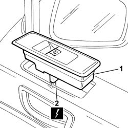

7005M12 PASSENGER SIDE FRONT DOOR ELECTRICALLY OPERATED WINDOW SWITCH - R R
- Path
- Procedures > 70 FITTINGS > 7005 PASSENGER COMPARTMENT FRONT SIDE DOORS > 7005M FRONT ELECTRIC WINDOWS > 7005M12 PASSENGER SIDE FRONT DOOR ELECTRICALLY OPERATED WINDOW SWITCH - R R
- Kind
- repair procedure (removal / refitting; the operation number is the code)
- Applies to
- all engines; all production periods
- Interactive page
- https://sloeber94.github.io/elrnDB-fUlss/en/#/179007678
Applies to: all engines; all production periods
 Removing
Removing
 Refitting
RefittingOp. 5530B56 BATTERY DRIP TRAY COVER - R.R.
- Disconnect the negative battery terminal.
1. Release the trim using a suitable tool.
2. Disconnect the electrical connection.
- Remove the trim complete with switch.

Applies to: all engines; all production periods
Refitting
Removing- Connect the electrical connection.
- Position the trim complete with switch.
- Connect the negative battery terminal.